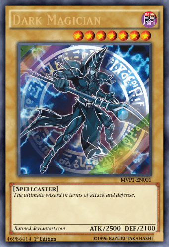
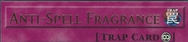
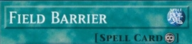

How a turn works?
Draw Phase:
Draw 1 Card from your deck. (Note: The Player who goes first cannot draw during the Draw Phase of their first turn.)
Standby Phase:
Only to be used when a card is stated with words "Standby Phase"
Main Phase 1:
You can Summon or Set Monsters, Play Spell Cards and Traps & also set them.
Battle Phase:
This is where you make the moves to attack. You can only attack one mosnter at a time(Note: The Player who went first cannot conduct battle on their first turn.)
Main Phase 2:
You can play additional Spells & Traps after the Battle Phase, you can also summon monsters in this phase if not done so.
End Phase:
Your turn is over it is now the opponent's Draw Phase
How to play your monsters?
Summoning Normal Monster cards
Upright = Attack Position
In the red marked area you see that both of these tuner monsters are normal summoned. As per indicated by this players turn.
Setting Monster cards
Sideways = Defense Position
Set monster cards are useful if you want to place a flip monster card to bait an opponent out.
Damage Phase
HIGH ATK V LOW ATK

HIGH ATK = Greater DMG towards opponent
If your Attack is greater than your opponent's card then you destroy your opponent's card
LOW ATK V HIGH ATK

LOW ATK = Greater DMG towards yourself
If your Attack is lower than your opponent's card then you take self inflicted damage
Equal ATK V Equal ATK
Equal ATK = No one takes DMG both cards destroyed
If your Attack is equal to your opponent's card then no one takes damage and both cards are destroyed.
Spells & Traps

How to play a spell card
You can play as many spell cards as you like during your turn
You can also set and play the spell card (as seen on the image on the right of the playing mat)
- First place the Spell from your hand to your Spell & Trap Zone. (Indicated by the 1 on the playing mat)
- Second follow the instructions on the card.
- Lastly place the card in the graveyard after use.
(Note that some Spell cards can remain on the field after you use them).
(To set spell cards you simply need to place the card face down as seen below for playing a trap card.)
How to play a trap Card
You can play as many Traps cards as you like during your turn but it must be set
You can also set and play the spell card (as seen on the image on the right of the playing mat)
(Note that some Trap cards can remain on the field after you use them).
- First place the Trap from your hand to your Spell & Trap Zone.
- Second flip the card on any turn even on your opponents turn.
- Lastly place the card in the graveyard after use.
Spells & Traps Icons
Continuous:
 These Spell and Trap Cards stay on field after you play them. Their effects work as long as they stay on the field.
Equip: